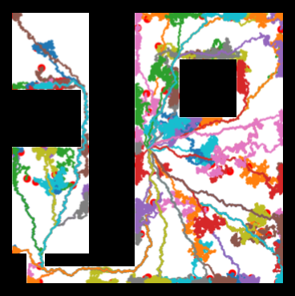

C3PO: Learning to Achieve Arbitrary Goals
via Massively Entropic Pretraining
.gif)
.gif)
.gif)
.gif)
Introduction
Reinforcement learning (RL) has shown great results in optimizing for single reward functions
Our proposed approach, Conditioned Continuous Control Policy Optimization (C3PO), is based on the hypothesis that disentangling the exploration phase from the policy learning phase can lead to simpler and more robust algorithms. It is composed of two steps:
- Goal Discovery: generating a set of achievable states, as diverse as possible to maximize coverage, while being as uniform as possible to facilitate interpolation.
- Goal-Conditioned Training: leveraging these states to learn to reach arbitrary goals.
To address the goal discovery step in C3PO, we propose the Chronological Greedy Entropy Maximization (ChronoGEM) algorithm, designed to exhaustively explore reachable states, even in complex high dimensional environments. ChronoGEM does not rely on any form of trained policy and thus doesn't require any interaction with the environment to learn to explore. Instead it uses a highly-parallelized random-branching policy to cover the environment, whose branching tree is iteratively re-pruned to maintain uniform leaf coverage. This iterative pruning process leverages learnt density models and inverse sampling to maintain a set of leaf states that are as uniform as possible over the state space. Training the goal-conditioned policy is then performed by leveraging the uniform states generated by ChronoGEM as a dataset of goals that provide well-distributed coverage over achievable states.
Conditioned Continuous Control
Policy Optimization (C3PO)
Massively Entropic Pre-Training. As described above, the first step is to discover the set of achievable goals.
This collection will be the key of the effectiveness of the resulting policy: We want it as uniform as possible such that no reachable region is neglected.
Therefore, without any prior, the ideal set of goals should be uniformly sampled from the manifold of states that are reachable in a given number of steps (
However, it is possible to approximate such a sampling if enough states are simultaneously explored at the previous time step (
ChronoGEM. This suggests a recursive approach to approximate a uniform sampling of the reachable states in

Continuous maze. As a tool scenario to test ChronoGEM, we implemented a two-dimensional continuous maze in which actions are
Goal-conditioned training. To build C3PO, we modified Brax' implementation of SAC to take a set of goal as input and train to reach them.
The reward is the opposite of the maximum of the euclidean distance between a body (e.g. an arm, the torso, a leg) and its goal position.
As a result the policy is encouraged to move to the correct location and then match the correct pose. The goal is added to the observation as a relative position to the current position.
We says that a goal is reached if the Euclidean distance between the agent's state and the goal is smaller that a tolerance threshold
Experiments
Environments. We used the control tasks from Brax
Algorithm and baselines. To collect training data, ChronoGEM was run with
Training goals entropy. Given a set of points
The estimation
Reaching unseen goals. If an exploration method is good, drawing from the states it explored should be a good approximation of drawing from all achievable states.
The state distribution induced by an exploration algorithm can be used both as a training set of goal, but also as an evaluation set of goals.
For each environment, we ran every of the four examined exploration methods (ChronoGEM, Random Walk, SMM and RND)
with 3 seeds to build 3 training goal sets per method and 3 evaluation goal sets per method.
Training goal sets have 4096 goals and evaluation goal sets have 128 goals.
We plot the success rate with regard to the tolerance, for each environment and evaluation goal set.
The next figure shows that evaluated on ChronoGEM goals, only C3PO -- which is trained on ChronoGEM -- gets good results while evaluated on goals from other methods.
This is a good hint that the diversity of ChronoGEM goals is higher than other exploration methods.
C3PO performs well on other evaluation sets as well, in particular in the low distance threshold regime (see Hopper and Walker).
This can be explained by the fact that C3PO learns to reach a high variety of poses, since being able to achieve poses with high fidelity is what matters for low distance threshold regime.
Entropy Weighted Goal Achievement (EWGA). However, previous achievement rates alone are still hardly interpretable: for example, being good at reaching goals generated by the random walk is less important than achieving harder goals, especially those from the highly entropic distributions (like ChronoGEM goals on Halfcheetah or SMM goals on Walker). We hence summarized the results by collecting all the areas under the curve (AUC), and weighting them proportionally to the exponential of the evaluation goals entropy in the following Figure. Indeed, if a set is very diverse, it means more to be able to achieve all of its goals, and vice-versa: if a set is not diverse we don't want to give too much importance to it, as achieving always the same goal is not so interesting. The exponential of the entropy quantifies the number of states in the distribution. We call this metric Entropy Weighted Goal Achievement (EWGA):
Massive goal-conditioned training
Now that we established that ChronoGEM is the best exploration method for the purpose of producing training goals for a goal-conditioned setup,
we will only use this method. We know allow ourselves to train for massive amount of steps, and see what is the best policy we can achieve.
Thanks to Brax's high parallelization and efficient infrastructure, it is possible to run 30G steps in a couple days.
Humanoid. We also add Humanoid to our set environments. By default, ChronoGEM would mostly explore positions where the humanoid is on the floor. However, it was simple to modulate the algorithm to only explore uniformly in the space of state where the humanoid is standing. For example, on can just associate zero weight to undesired states during the re-sampling step. That way, we avoided states in which the torso go under the altitude of .8 (the default failure condition). ChronoGEM is modified to not draw states where the humanoid is too low. The goal-conditioned learner gets a high penalty for going too low too. The visual results of a policy able to achieve 90\% success at .25 tolerance are represented in the following gifs. This shows that when we do have a prior, we can leverage it to steer the exploration and policy learning.
.gif)
.gif)
.gif)
.gif)
.gif)
.gif)
.gif)
.gif)
.gif)
.gif)
.gif)
.gif)
.gif)
.gif)
.gif)
.gif)
.gif)
.gif)
.gif)
.gif)
.gif)
.gif)
.gif)
.gif)
Conclusion
In the real world, no reward function is provided. To be able to learn anyways, we designed ChronoGEM, an exploration method that generates high entropy behaviors, in theory (see a proof in our paper's appendix) and in practice (see the goals entropy experiment), outperforming baseline algorithms. All the skills discovered by an exploration algorithm can be used to train a goal-conditioned policy. We showed that training ChronoGEM goals results in the most potent policies compared to other exploration methods. On Hopper, Walker, HalfCheetah, Ant and Humanoid, visuals and metrics show that the policy we trained is able to achieve a large variety of goals - by moving to the correct position and then matching the pose - with high fidelity.
This article was prepared using the Distill template.
Citation
For attribution in academic contexts, please cite this work as
Jacq et al., "C3PO: Learning to Achieve Arbitrary Goals via Massively Entropic Pretraining", 2022
BibTeX citation
@article{jacq2022c3po,
title = {C3PO: Learning to Achieve Arbitrary Goals
via Massively Entropic Pretraining},
author = {Jacq, Alexis and Orsini, Manu and Dulac-Arnold, Gabriel and Pietquin, Olivier
and Geist, Matthieu and Bachem, Olivier},
journal = {arXiv preprint arXiv:TBD},
year = {2022},
pdf = {https://arxiv.org/pdf/TBD.pdf},
}